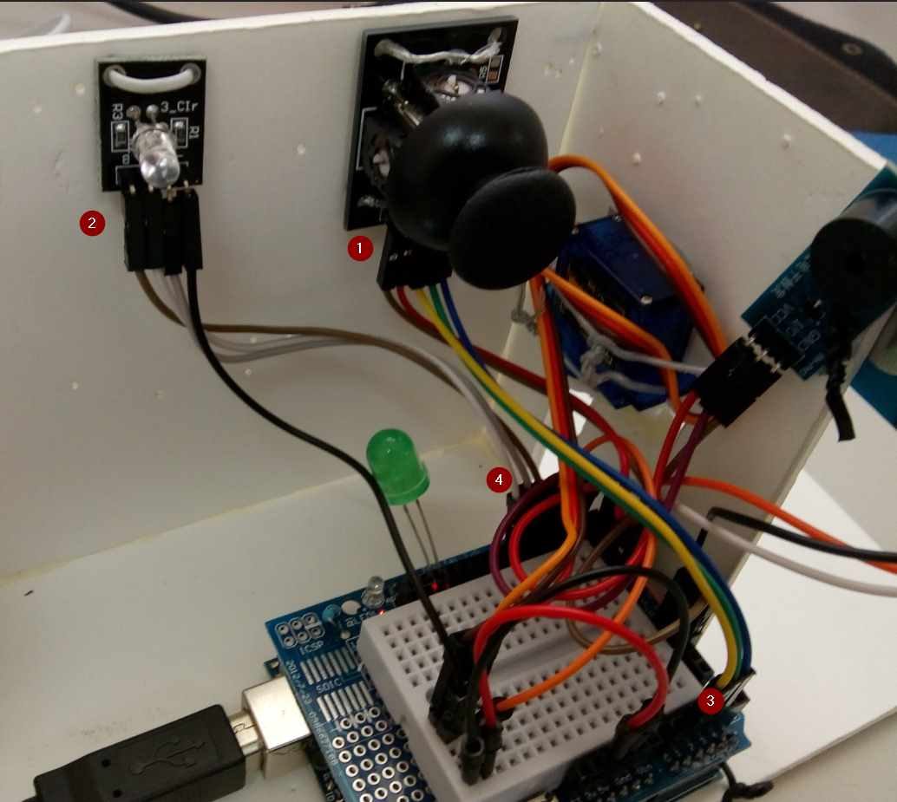
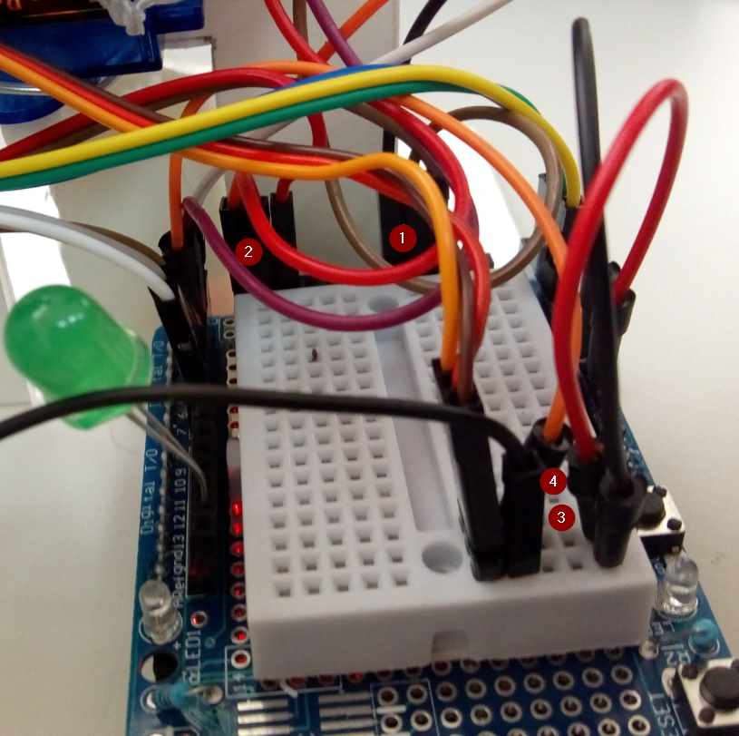

3.4 JOYSTICK
3.4.1 Objetivos
Ahora vamos a utilizar el Joystick para dos intenciones:
- Aprovechando el SWITCH central:
- Si se hace una pulsación larga:
- la puerta se abre (si estaba cerrada)
- o se cierra (si estaba abierta)
- Si se hace una pulsación larga:
- El mando del Joystick nos regulará una luz ambiental
- El eje X en azul
- El eje y el rojo
- Un valor intermedio es un valor de los dos
3.4.2 Maqueta
Vamos ampliando nuestra casa domótica con la luz RGB y el Joystick:
- Joystick fijado en la pared
- Led RGB fijado en la pared
- Conexiones Joystick en entradas analógicas
- Conexiones de RGB a las salidas digitales

3.4.3 Esquema eléctrico
Es igual que cuando vimos 2.6 Joystick:
- Terminales GND del led RGB y del Joystick
- Terminal +5V del Joystick
- Otra opción de conectar el terminal GND
- Otra opción de conectar +5V
y las demás conexiones igual que antes:
- D5 PWM al Rojo del RGB (tiene que ser PWM)
- D6 PWM al Azul del RGB (tiene que ser PWM)
- D7 al Verde del RGB (luego lo utilizaremos)
- A1 al EJEX JOYSTICK
- A2 al EJEY JOYSTICK
- A3 al SWITCH JOYSTICK
Nota: El microruptor del Joystick es digital luego lo apropiado es conectarlo en una entrada salida digital, pero como vamos escasos de entradas y salidas digitales (ya verés como esto se complica), lo trataremos como analógico.

3.4.4 Vídeo
3.4.5 Código
///////////////////////////////////////LIBRERIAS
#include <Servo.h>
#include <SoftwareSerial.h>
///////////////////////////////////////ENTRADAS SALIDAS DIGITALES ///////
// 0 ocupado por el puerto serie ordenador-arduino
// 1 ocupado por el puerto serie ordenador-arduino
const int PULSADORTIMBRE =2; //sensor tactil
const int TIMBRE =3; //buzzer activo
const int PUERTA = 4; //servo puerta
const int AZUL = 5; //led RGB
const int ROJO = 6; //led RGB
const int VERDE = 7; //led RGB
const int LED = 13;
////////////////////////////////////// ENTRADAS ANALÓGICAS /////////////
const int JOYSTICKAZUL = 1;
const int JOYSTICKROJO = 2;
const int JOYSTICKSW = 3;
////////////////////////////////////// OBJETOS
Servo myservo; //objeto servo
///////////////////////////////////////VARIABLES
const int ABIERTO =0; //ángulo abierto puerta
const int CERRADO =75; //ángulo cerrado puerta, se ha modificado con respecto a 90 que es cierre total pues tropezaba con la pared
bool PUERTAABIERTA; //guardará si está abierto o no
const int QUITAREBOTES = 1000; //el tiempo para eliminar rebotes
String command = ""; // guardará la respuesta desde el BT
bool ENCENDIDO; //guardará que debe de dejar la luz encendida
/////////////////////////////////////FUNCIONES
void CerrarPuerta();
//////////////////////////////////////////////////////////////////////////
/////////////////////////////////////////INICIO //////////////////////////
//////////////////////////////////////////////////////////////////////////
void setup() {
Serial.begin(9600); //inicializar el puerto serie del ordenador
////////////////////////////////fijar input/output
pinMode(PULSADORTIMBRE, INPUT);
pinMode(TIMBRE, OUTPUT);
pinMode(PUERTA, OUTPUT);
pinMode(AZUL, OUTPUT);
pinMode(ROJO, OUTPUT);
pinMode(VERDE, OUTPUT);
pinMode(LED,OUTPUT);
///////////////////////////////fijar situación inicial
digitalWrite(TIMBRE,HIGH); // timbre apagado
myservo.attach(PUERTA); //servo en el pin correspondiente
myservo.write(CERRADO); //puerta cerrada
PUERTAABIERTA = false;
digitalWrite(AZUL,LOW); //luz rgb apagada
digitalWrite(ROJO,LOW); //luz rgb apagada
digitalWrite(VERDE,LOW); //luz verde apagada
}
//////////////////////////////////////////////////////////////////////////
/////////////////////////////////////////BUCLE ///////////////////////////
//////////////////////////////////////////////////////////////////////////
void loop() {
//////////////////////////// timbre ////////////////////////////////////////
if (digitalRead(PULSADORTIMBRE)){
Serial.println("Abriendo puerta .... ");
PUERTAABIERTA=true;
myservo.write(ABIERTO);
delay(3000);
CerrarPuerta();
}
////////// pulsadorjoystick abrir y cerrar la puerta //////////////////////
int valor=analogRead(JOYSTICKSW);
//Serial.println(valor);
if (valor==0){
delay(QUITAREBOTES);
valor=analogRead(JOYSTICKSW);
if (valor==0){
Serial.println("//////////////HAS PULSADO EL BOTÓN DEL JOYSTICK");
command="boton";
}
}
if (command=="boton"){
if (!PUERTAABIERTA){
Serial.println("Abriendo puerta .... ");
PUERTAABIERTA=true;
myservo.write(ABIERTO);
}else{
CerrarPuerta();
}
}
command = "";
//////////// juego luces joystick //////////////////////////////////////////
int valorAz = analogRead(JOYSTICKAZUL);
valorAz = (valorAz-500)/2.5;
if (valorAz<5) valorAz =0;
if (!ENCENDIDO)analogWrite(AZUL,valorAz);
int valorRo = analogRead(JOYSTICKROJO);
valorRo = (valorRo-550)/2.5;
if (valorRo<5) valorRo =0;
if (!ENCENDIDO) analogWrite(ROJO,valorRo);
}
//////////////////////////////////////////////////////////////////////////
//////////////////////////////////FUNCION CERRAR PUERTA////////////////////
//////////////////////////////////////////////////////////////////////////
void CerrarPuerta(){
if (PUERTAABIERTA){
for (int i=1;i<=3;i++){
Serial.println("CERRANDO PUERTA !!!");
digitalWrite(LED,HIGH);
digitalWrite(TIMBRE,LOW);
delay(1000);
digitalWrite(TIMBRE,HIGH);
digitalWrite(LED,LOW);
delay(1000);
}
myservo.write(CERRADO);
PUERTAABIERTA=false;
Serial.println("Puerta cerrada");
}
}